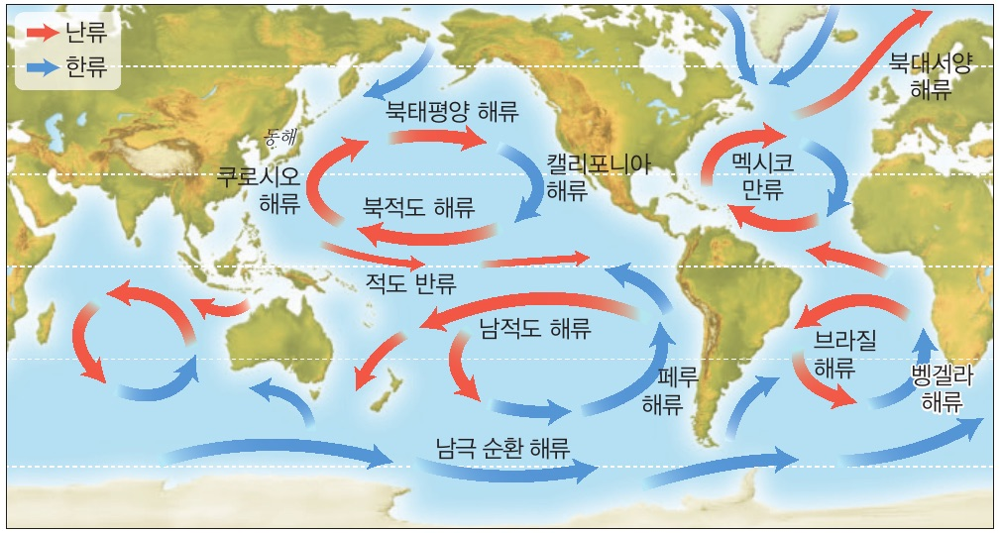

「복사」, 「평형」, 「온실」이 무슨 뜻이에요?
태양 복사 에너지 = 태양이 내보내서 지구에 오는 에너지(햇빛).
지구 복사 에너지 = 지구가 우주로 내보내는 에너지. 주로 눈에 안 보이는 적외선이에요.
복사 평형 = 들어온 만큼 나간다
구멍 난 양동이는 물이 높을수록 세게 새요. 그래서 물이 차오르다가 들어오는 양 = 나가는 양이 되면 높이가 멈춰요.
지구도 똑같아요. 물 = 에너지, 물 높이 = 지구 온도. 지구가 흡수한 태양 복사 에너지 = 우주로 내보내는 지구 복사 에너지가 되어 온도가 일정하게 유지돼요. 이게 복사 평형이에요.
숫자(컵)는 비유예요. 교과서 그림에는 숫자가 없어요.
온실 효과: 대기가 열을 붙잡았다가 다시 내려보내요
하늘색 = 대기, 회색 점 = 온실 기체(수증기·이산화 탄소·메테인 등), 노란 화살표 = 햇빛, 빨간 물결 = 지구 복사(적외선)
온실 기체만 눌러요
메테인은 유기물이 썩거나 발효될 때, 가축을 키울 때 나와요.
지구 열수지: 화살표 굵기로 봐요
온실 기체
빙하 면적
열수지 = 열의 수입(들어옴)과 지출(나감). 우주, 대기, 지표 각각에서 흡수 = 방출이에요.
A(지표에 닿는 햇빛)가 대기에 흡수되는 햇빛보다 굵어요. 대기가 햇빛을 쉽게 통과시키니까요.
교과서 그림 Ⅱ-8에는 숫자가 없어요. 그래서 여기도 굵기로만 비교해요.
온실 효과 ≠ 지구 온난화
기온이 높게 유지되는 것. 원래 있어야 하는 좋은 현상
평균 기온이 점점 높아지는 것. 온실 효과가 강해져서 생겨요
「지구의 평균 기온이 점점 높아지는 현상은 온실 효과」는 틀린 보기예요(95쪽 1번).
이산화 탄소가 늘수록 기온도 올라가요
아래 동그라미는 기온 편차(1880~2021년 평균보다 높으면 +, 낮으면 −)예요. 1980년 무렵부터 모두 +, 2016년 무렵 약 1.0 ℃.
「증가율」은 늘어난 양을 걸린 햇수로 나눈 것(기울기)이에요. 늘어난 양만 보면 틀려요.
왜 해수면이 올라갈까
그 밖의 영향: 태풍·홍수의 횟수와 세기 증가, 가뭄, 사막화, 농작물 생산량 감소, 생물종 멸종 위기, 물 부족, 질병.
기온이 오르면 사과·귤을 기르는 곳이 북쪽으로 올라가요. 우리나라의 아열대 기후 지역은 넓어져요(줄어든다 = 틀린 보기).
산업화 이전보다 몇 ℃ 오르면?
IPCC 예상. 지금은 이미 약 +1.1 ℃예요.
어떻게 막을까
화석 연료 사용 줄이기, 신재생 에너지 개발.
2015년 파리 기후 변화 협약: 산업화 이전보다 2 ℃ 이하로, 1.5 ℃를 넘지 않도록.
2050 탄소 중립: 내보낸 탄소만큼 없애서 순배출량 0. 우리나라는 2020년에 「2050 탄소 중립 계획」을 발표했어요.
지구가 둥글어서 위도마다 받는 햇빛이 달라요
같은 굵기의 햇빛 다발이 적도에서는 좁은 땅에 몰려서 많이 데워요. 극지방에서는 비스듬히 넓게 퍼져서 덜 데워요.
위도 38°에서 남고 모자람이 바뀌어요
저위도는 에너지 과잉, 고위도는 에너지 부족. 남는 에너지는 대기와 해수의 순환이 저위도 → 고위도로 옮겨요.
옮겨 주지 않으면 저위도는 계속 더워지고 고위도는 계속 추워져서 온도 차이가 더 커져요.
대기 대순환: 북반구를 옆에서 잘라 봐요
바람 이름 = 「불어오는 쪽」 이름
옛날 무역선이 타던 바람
서쪽에서 불어와요
극지방의 동풍
자전 때문에 바람이 휘어서, 지표 부근에 이 세 바람이 1년 내내 불어요. 북반구와 남반구는 거울처럼 대칭이에요.
「B(30°~60°) 지표에서 바람이 동에서 서로 분다」는 틀린 보기예요. 그건 무역풍 방향이에요.
해수의 표층 순환
무역풍이 저위도 바닷물을 서쪽으로(북적도 해류), 편서풍이 중위도 바닷물을 동쪽으로(북태평양 해류) 밀어요. 대륙에 막혀 돌아서 커다란 고리가 돼요.
북반구와 남반구에서 거의 대칭으로 돌아요. 북쪽 고리는 시계 방향, 남쪽 고리는 시계 반대 방향.
쿠로시오 해류는 따뜻한 물을 북쪽으로 날라요. 저위도의 남는 에너지를 고위도로 옮기는 예예요(95쪽 4번).

교과서 밖(참고서) 이름: 0°~30° 해들리 순환, 30°~60° 페렐 순환, 60°~90° 극순환
엘니뇨 = 무역풍이 「평상시보다 약해진」 때
적도 태평양을 옆에서 자른 단면으로 봐요. 왼쪽이 서태평양(인도네시아 쪽), 오른쪽이 동태평양(페루 쪽)이에요.
따뜻한 해수층 = 햇빛에 데워진 위쪽 바닷물(주황). 그 밑은 차가운 깊은 바닷물(파랑).
엘니뇨는 에스파냐어로 「남자아이」라는 뜻이에요.
평상시 vs 엘니뇨
「다음 단계」는 평상시에서 엘니뇨로 무엇이 차례로 바뀌는지 하나씩 보여 줘요.
무역풍이 따뜻한 물을 서쪽으로 밀어요
무역풍 때문에 표층 해류가 동 → 서로 흘러요. 페루 앞바다의 따뜻한 물이 서쪽으로 가고, 그 빈자리를 깊은 곳의 차가운 해수가 올라와 채워요.
그래서 서태평양: 수온 높고 증발이 많아 비가 많아요. 동태평양: 같은 위도의 서태평양보다 기온이 낮고 건조해요.
방향 · 장소 · 세기를 한 줄로
공기가 올라가는 곳에 구름이 생기고 비가 와요. 따뜻한 물을 따라 상승 지역이 동쪽으로 옮겨 가서 페루(동) 홍수, 인도네시아(서) 가뭄·산불(그림 Ⅱ-13).
엘니뇨는 대기와 해양의 상호작용으로 생기고, 세계 여러 지역 기후에 영향을 줘요.
(가)(나), A·B 찾는 법
동태평양 수온이 높다 / 따뜻한 해수층이 두껍다 → 그쪽이 엘니뇨. 그다음 나머지를 「무역풍 약, 동쪽 비, 서쪽 건조」로 대조해요.
라니냐 · 용승
라니냐(무역풍이 평상시보다 강해짐)와 용승(깊은 물이 올라옴)은 교과서에 없는 말이에요. 시험은 평상시와 엘니뇨 비교로 나와요. 선지에 나오면 오답으로만 보면 돼요.
사막은 왜 위도 30° 부근에 있을까
사막 = 1년 강수량이 250 mm 이하인 곳.
사막화 = 사막 「주변」 초원이 사막이 되는 것
피해: 물 부족, 식량 부족, 황사로 인한 대기 오염.
자연적 원인? 인위적(사람) 원인?
「인위적」 = 사람이 한 일. 교과서 90쪽 원문 순서 그대로예요.
우리나라의 황사
「상층의 무역풍이 황사를 나른다」는 틀린 보기예요. 무역풍은 저위도에서 동 → 서로 불어요.
방향 · 장소 · 세기
- 엘니뇨 한 줄무역풍 약 → 동태평양 수온 ↑, 따뜻한 해수층 두께 ↑, 깊은 곳 찬 해수 올라옴 ↓, 상승 지역 동쪽으로, 동쪽 홍수, 서쪽 가뭄
- 복사 짝대기는 태양 복사는 쉽게 통과, 지구 복사(적외선)는 대부분 흡수
- 에너지 이동 방향저위도(과잉) → 고위도(부족), 경계는 위도 38°
- 바람 이름황사를 나르는 것은 상층의 「편서풍」, 북태평양 해류를 만드는 것도 편서풍
- 반사율하얀 빙하가 줄면 햇빛을 덜 튕겨 내요 → 반사율 감소
- 온실 기체 아님질소(N₂). 「산화 이질소」와 「질소」를 끝까지 읽어요